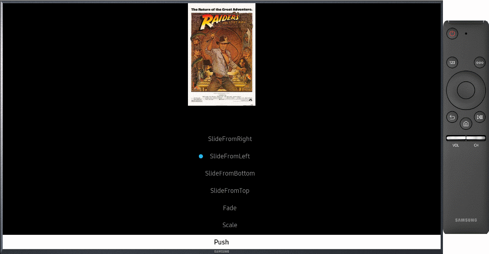
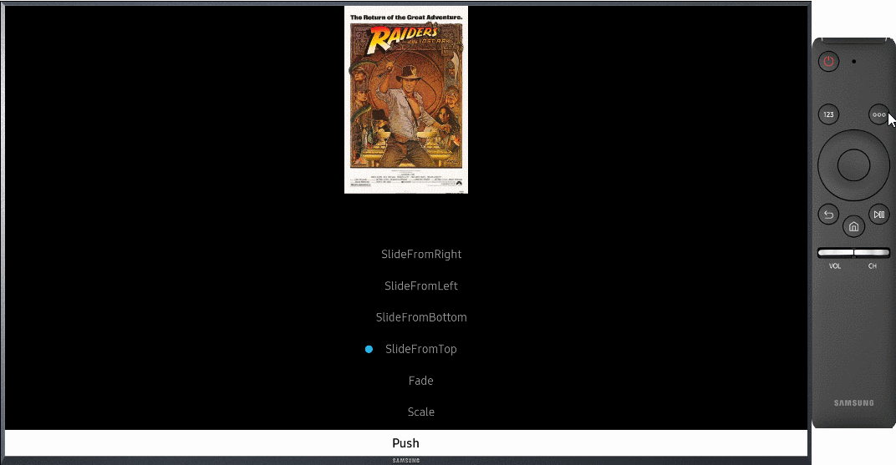
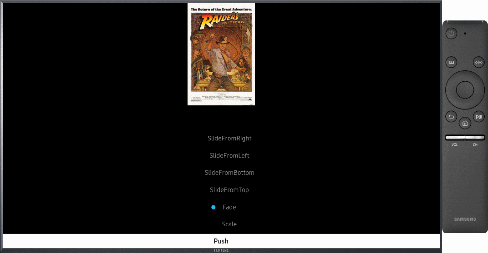

AnimatedNavigationPage
Introduction
AnimatedNavigationPage is a subclass of Xamarin.Forms.NavigationPage that support page tranisition animation when the page is popped or pushed. Each page can define a push transition animation and pop transition animation respectively using the attached properties below.
- SetPushAnimation()
- SetPushAnimationRate()
- SetPushAnimationLength()
- SetPopAnimation()
- SetPopAnimationRate()
- SetPopAnimationLength()
When the page is pushed or popped through AnimatedNavigationPage, the defined animation will run.
Creating the Root Page
The first page added to a navigation stack is referred to as the root page of the application, and the following code example shows how this is accomplished:
public App ()
{
MainPage = new AnimatedNavigationPage (new MyPage());
}
This causes the MyPage ContentPage instance to be pushed onto the navigation stack, where it becomes the active page and the root page of the application.
Describing the Page Transition Animations
Through various attached properties provided by AnimatablePage, all pages can define push/pop animation as shown below.
public MyPage ()
{
var pushAnim = new Animation (v => Opacity = v, 0, 1);
var popAnim = new Animation (v => Opacity = v, 1, 0);
this.SetPushAnimation(pushAnim);
this.SetPopAnimation(popAnim);
}
You can define your own page transition animations like this.
Using the AnimatedContentPage
For convenience, we provide predefined page transition animations through AnimatedContentPage. AnimatedContentPage is a subclass of Xamarin.Forms.ContentPage that provide pre-defined page tranisition animation. The PageTransition property allows you to set pre-defined page transition animations for each pages. The predefined page transition animations are as follows.
SlideFromLeft: Slide from left to right on push, and slide from right to left on pop SlideFromRight: Slide from right to left on push, and slide from left to right on popSlideFromTop: Slide from top to bottom on push, and slide from bottom to top on pop SlideFromBottom: Slide from bottom to top on push, and slide from top to bottom on popFade: Show a fade animation Scale: Show a scale animation
var page = new AnimatedContentPage
{
PageTranistion = PageTranistion.SlideFromRight
};
//Push a page
await Navigation.PushAsync(page);
//Pop a page
await Navigation.PopAsync();
Limitations
The basic page navigating method is the same as Xamarin.Forms.NavigationPage, but the following methods and properties are not supported.
- BackButtonTitle
- HasNavigationBar
- HasBackButton
- Tint
- BarBackgroundColor
- BarBackground
- BarTextColor
- TitleIcon
- IconColor
- TitleView